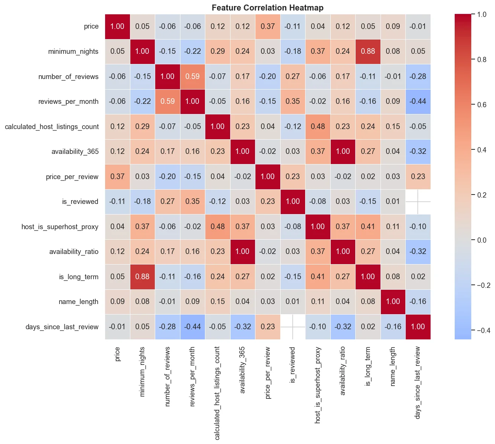
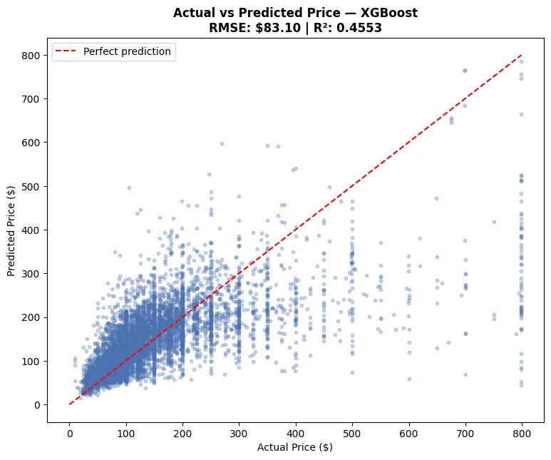
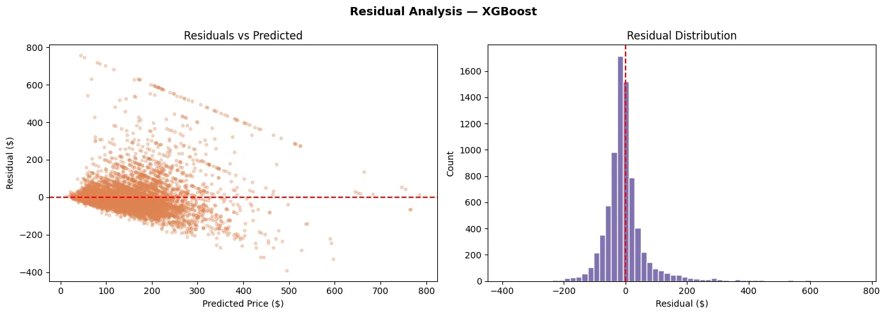

The solution
The code here is straight from my pipeline files, only re-indented. Long functions are excerpts and I say what I cut. Every number comes out of my own saved outputs: the metrics file my training run writes, the run lines in my log, my SQL file, and the charts my pipelines generate.
I built the project as one pipeline with three consumers. My ETL layer (data_loader, data_cleaner, feature_engineer, db_loader) takes the raw CSV, cleans and enriches it, and loads it into PostgreSQL. My SQL analytics file answers the market questions against the loaded table. My ML branch trains and compares three models, cross-validates the winner, and saves the full sklearn pipeline (preprocessing included) as one artifact. My FastAPI backend loads that artifact and serves predictions, and my Streamlit frontend gives the four explorer pages. My pipelines also generate 15 charts that document the EDA and the model evaluation; I embedded six of them across these two pages.
| Component | Where it lives | What I built it to do |
|---|---|---|
| Raw data | data/raw/AB_NYC_2019.csv | The public Airbnb NYC 2019 open dataset, 48,895 listings |
| ETL pipeline | pipelines/data_cleaner.py, feature_engineer.py | My cleaning steps, outlier caps, and 11 engineered feature functions |
| Database layer | pipelines/db_loader.py, db_connection.py | SQLAlchemy load into PostgreSQL |
| SQL analytics | sql/analytics.sql | My 16 business queries in 6 sections, including window functions |
| Training code | pipelines/ml_pipeline.py | Three models, preprocessing, 5-fold CV, evaluation, 3 charts |
| Model artifact | models/best_model_xgboost.pkl + model_info.txt | The full pipeline (preprocessor + XGBoost) I save with its metrics |
| API | app/backend/ (FastAPI) | health, predict, model-info endpoints with Pydantic validation |
| Frontend | app/frontend/ (Streamlit) | Market analytics, price prediction, neighbourhood explorer, model performance |
| Generated evidence | reports/charts/ (15 charts), app.log | My EDA charts, evaluation charts, and the run lines every number here comes from |
One scoping note I want on the record: my README describes a Docker Compose deployment and cloud targets as the plan. I have not shipped the container files yet, so I treat deployment as documented intent, not something I claim as running.
The data and my cleaning pass
The raw file is the Airbnb NYC 2019 open dataset: 48,895 rows, 16 columns. I wrote each cleaning function to do one job and log what it did, so my run log preserves the counts. These are the actions it recorded:
| Step I built | What it did | Why I did it |
|---|---|---|
| Drop zero prices | 11 rows removed | A $0 listing is an invalid record that breaks averages and models |
| Cap price outliers | Prices above the 99th percentile ($799) clipped to it | Raw max is $10,000 against a median of $106. Capping keeps real rows but limits their pull |
| Cap minimum nights | Values above the 99th percentile clipped | Raw max is 1,250 nights, about 3.4 years, which would distort my model |
| Fill review nulls | 10,052 rows: reviews_per_month set to 0, last_review flagged | Those listings have never been reviewed. Zero is the true value, not a placeholder |
| Fill text nulls | 16 listing names, 21 host names set to 'Unknown' | The rows stay valid; the text is just missing |
| Standardise text | Whitespace stripped, neighbourhoods title-cased | So 'Manhattan' and ' Manhattan' do not split into two categories |
| Parse dates | last_review converted to datetime, unparsable values kept as null | My time-based features need a real date type |
def cap_price_outliers(df: pd.DataFrame) -> pd.DataFrame:
"""
Why cap instead of drop?
- Dropping removes real data (some listings ARE expensive).
- Capping keeps the row but limits its influence on the model.
- The 99th percentile is a standard industry threshold.
"""
cap_value = df["price"].quantile(0.99)
df["price"] = df["price"].clip(upper=cap_value)
return dfMy validation report at the end of the run confirms the result: 48,884 rows, 16 columns, no missing values left in the modelling columns, price max $799.
My feature engineering and the leakage call
I wrote eleven feature functions that run after cleaning. Some serve the exploratory charts, some serve my model. The ones my model actually uses are 16: three categoricals (borough, neighbourhood, room type), two price-encoded geography columns, and eleven numeric features.
FEATURES = [
# Categorical
"neighbourhood_group",
"neighbourhood",
"room_type",
# Numeric - price-encoded geography
"neighbourhood_median_price",
"neighbourhood_group_median_price",
# Numeric - original
"minimum_nights",
"number_of_reviews",
"reviews_per_month",
"calculated_host_listings_count",
"availability_365",
# Numeric - engineered
"is_reviewed",
"host_is_superhost_proxy",
"availability_ratio",
"is_long_term",
"name_length",
"days_since_last_review",
]The geography encoding is the decision I am proudest of here. It replaces raw names with each area's median price, so my model gets numeric signal it can split on, and it stays compact where one-hot encoding 221 neighbourhoods would not.
"""
Why this works better than ordinal encoding:
OrdinalEncoder assigns arbitrary numbers - 'Tribeca'=187,
'Bronx'=23. The model has no idea 187 means expensive.
Median price encoding gives the model real signal:
'Tribeca' -> $295, 'Fordham' -> $55.
"""
neigh_median = (
df.groupby("neighbourhood")["price"]
.median()
.rename("neighbourhood_median_price")
)
df["neighbourhood_median_price"] = df["neighbourhood"].map(neigh_median)Two features I built and then excluded
My engineering step also creates price_per_review (price divided by reviews) and price_category (budget to luxury buckets). Neither reaches my model. Both are derived from the target, so training on them would hand my model the answer. My code comment on the feature list says exactly that, and my correlation heatmap shows why the temptation exists: price_per_review is the only feature correlating with price at 0.37.

One preprocessing note on my choice: categoricals go through an OrdinalEncoder with an unknown-value fallback rather than one-hot encoding. With 221 unique neighbourhoods, one-hot would add 221 columns; the ordinal route keeps my matrix compact, and the tree models do the category work themselves.
My model and its real numbers
I kept training to one script. It loads my featured data, drops rows with any missing feature or target value (38,833 rows remain), splits 80/20 into 31,066 training and 7,767 test rows with a fixed random state so anyone can reproduce it, builds a preprocessing pipeline (encoding plus scaling), and trains three models on identical inputs.
"RandomForest": Pipeline([
("preprocessor", preprocessor),
("model", RandomForestRegressor(
n_estimators=200, max_depth=15,
min_samples_leaf=5, max_features=0.8,
random_state=42, n_jobs=-1
))
]),
"XGBoost": Pipeline([
("preprocessor", preprocessor),
("model", XGBRegressor(
n_estimators=300, learning_rate=0.05,
max_depth=6, subsample=0.8, colsample_bytree=0.8,
random_state=42, n_jobs=-1, verbosity=0
))
]),I also keep a fourth configuration in the script, an XGBoost with heavier regularisation, alongside these. My comparison picks the lowest test RMSE, cross-validates the winner, and saves the full pipeline so my API can accept raw inputs without repeating preprocessing.
| Model | Test RMSE | Test MAE | R² |
|---|---|---|---|
| Linear regression | $90.58 | $53.19 | 0.3529 |
| Random forest | $83.83 | $47.43 | 0.4457 |
| XGBoost (my selection) | $83.10 | $47.20 | 0.4553 |
These are the numbers my training run saves to models/model_info.txt at the end, and they match my README comparison table and the final run lines in my log.


How I serve the model
My FastAPI backend loads the pickle once at startup and exposes three endpoints: GET /health, POST /predict and GET /model-info, with FastAPI's own docs page generated at /docs. The predict router is the part I would point a reviewer at, because it rebuilds every engineered feature from the raw request so the served input matches my training input exactly.
# Derived features - same logic as feature_engineer.py
is_reviewed = 1 if request.number_of_reviews > 0 else 0
is_long_term = 1 if request.minimum_nights >= 30 else 0
host_proxy = 1 if request.calculated_host_listings_count >= 5 else 0
avail_ratio = round(request.availability_365 / 365, 4)
# Neighbourhood price encoding
neigh_median = NEIGHBOURHOOD_MEDIANS.get(
request.neighbourhood,
BOROUGH_MEDIANS.get(request.neighbourhood_group, 106.0)
)
group_median = BOROUGH_MEDIANS.get(request.neighbourhood_group, 106.0)
# days_since_last_review - use training mean for new listings
days_since = 277.95Three serving decisions sit in this excerpt, all mine. Unknown neighbourhoods fall back to their borough median, and unrecognised boroughs to an overall median of $106, so my endpoint never crashes on a spelling difference. New listings with no review history get my training mean for review recency instead of a null. And I clip the output to a realistic band before it leaves my service.
# Clip to realistic range - model can sometimes predict
# negative or extremely high values for edge cases
predicted_price = max(10.0, min(predicted_price, 799.0))
predicted_price = round(predicted_price, 2)
# Build price range using MAE as uncertainty estimate
price_low = round(max(10.0, predicted_price - MODEL_MAE), 2)
price_high = round(min(799.0, predicted_price + MODEL_MAE), 2)
return PredictionResponse(
predicted_price=predicted_price,
price_range_low=price_low,
price_range_high=price_high,
currency="USD",
model_version="xgboost_v1",
...
)MODEL_MAE is my saved test MAE ($47.20), so my uncertainty band is measured, not decorative. I ran the service for real and captured it in the screenshots: a Manhattan entire home with a two-night minimum returned predicted_price 243.58 with a range of 196.38 to 290.78 and model_version xgboost_v1.
| Endpoint | Method | Purpose |
|---|---|---|
| / | GET | Service index |
| /health | GET | Service and model status |
| /predict | POST | Listing details in, price with low/high range out |
| /model-info | GET | Model version, feature count, target and dataset |
| /docs | GET | Auto-generated OpenAPI documentation |
My SQL analytics layer
I wrote 16 queries in analytics.sql across six sections, all against my featured_listings table in PostgreSQL: market overview, pricing intelligence, host analytics, availability and demand, review analytics, and window-function analytics. I structured the section headings around the market questions, so every query maps to something a host or a platform team would ask.
-- Percentile rank of every listing within its borough
-- Useful for telling a host "your listing is in the top X%"
SELECT
id,
name,
neighbourhood_group AS borough,
room_type,
price,
ROUND(
(
PERCENT_RANK() OVER (
PARTITION BY neighbourhood_group
ORDER BY price
) * 100
)::numeric,
1
) AS price_percentile_in_borough
FROM featured_listings
ORDER BY neighbourhood_group, price_percentile_in_borough DESC
LIMIT 20;That query is the bridge between my analytics layer and the product: it converts a price into a position, which is what a host actually needs to know. My other window queries rank neighbourhoods inside each borough (RANK), and build running totals and rolling three-row averages ordered by price (SUM and AVG with window frames).
| Section | Queries | What I wrote them to answer |
|---|---|---|
| Market overview | 3 | Total listings, hosts, neighbourhoods, average and median price; per-borough and per-room-type shares |
| Pricing intelligence | 3 | Top 15 neighbourhoods by price (min 30 listings), price-category mix per borough, room-type cross-tab |
| Host analytics | 3 | Top hosts by listings, proxy-superhost comparison, hosts by average review volume |
| Availability and demand | 2 | Availability category mix, availability by borough and room type |
| Review analytics | 2 | Review activity by borough, review-score category breakdown |
| Window functions | 3 | In-borough price ranks, running totals and rolling averages, per-listing percentile rank |
My Streamlit app
I built the frontend as a multipage Streamlit app with a shared utils module. My goal was to make the two layers usable without SQL or Python: a host enters listing details and gets a price with a range; an analyst browses the market with filters.
| Page | What it does |
|---|---|
| Market analytics | Interactive charts and filters over my cleaned market data |
| Price prediction | Listing form, calls my /predict endpoint, shows the price with its range |
| Neighbourhood explorer | Compares areas by price, reviews and availability |
| Model performance | Shows my model metrics and my feature importance chart |
A walkthrough recording of my app is embedded on the project page above these documents.
Where my numbers come from
I keep my pipeline honest by saving outputs as it runs, so every number on both pages can be traced to a file I produced. This is what each one sits on:
| Number | Where I saved it | What confirms it |
|---|---|---|
| Final metrics $83.10 / $47.20 / R² 0.4553 | models/model_info.txt | My README comparison table and the final training run line in my log |
| Cross-validation $80.65 ± $1.31 | Final run line in reports/app.log | My README cross-validation note |
| Cleaning counts (11 dropped, $799 cap, 10,052 review fills, 48,884 final rows) | Run lines in reports/app.log | The cleaning code's own documented expectations |
| Training shapes 38,833 / 31,066 / 7,767 | Run lines in reports/app.log | An 80/20 split of my modelling rows |
| 16 SQL queries | sql/analytics.sql | Counted from the file I wrote |
| Feature importance and market charts | reports/charts/ | Generated by my ml_pipeline.py and my EDA pipeline; I copied them into this site as the figures on these pages |
| Live prediction run | Project screenshots | My /predict returned $243.58 (range $196.38 to $290.78) for a Manhattan entire home, model_version xgboost_v1 |
One thing my log keeps me honest about: the final run is where my headline metrics come from, and an earlier run of mine shows RMSE $83.55 at 14 features, before my price-encoded geography columns landed. The improvement from the encoding is small but real, which is why I describe the encoding as signal, not magic.
My decisions and trade-offs
| Decision I made | Why | Trade-off I accepted |
|---|---|---|
| Cap outliers at the 99th percentile instead of dropping | Keeps real expensive listings in my data | My model never trains on true luxury prices, so it should not be asked about them |
| Fill never-reviewed listings' review counts with 0 | Zero is the true value, not a missing one | My recency features are null for them, which drops those rows from training |
| Target-encode neighbourhoods with median price | Gives my model real numeric geography signal, compact with 221 neighbourhoods | My medians are computed on the full dataset before the split, justified as stable geographic facts, but it is a choice I want to re-test with fold-wise encoding |
| Ordinal-encode the remaining categoricals | Keeps my matrix compact | Imposes an arbitrary order my trees must work around |
| Exclude price_per_review and price_category from my model | Both are derived from the target, so they leak | Loses the single strongest correlate of price in my heatmap |
| Build the response range from my test MAE | The uncertainty is measured, not invented | My band is uniform in dollars; it is wider than needed at the low end |
| Save the whole pipeline, preprocessing included | My API accepts raw inputs with no duplicate cleaning logic | The pickle carries sklearn version coupling |
| Clip my predictions to $10 to $799 | Serves plausible outputs on edge cases | Hides model failure at the extremes rather than surfacing it |
Deployment and next steps
- Refresh the dataMy 2019 snapshot ages; I will re-pull, re-run my ETL, retrain, and quote new metrics.
- Finish the container storyMy README plans Docker Compose for the API and database; I need to ship the Dockerfile and compose file so the one-command run is real.
- Fold-wise target encodingI want to re-test my neighbourhood medians computed inside each fold to remove the before-split computation entirely.
- Add the missing signalsAmenities, review quality and seasonality are where my unexplained half of price variance lives.
- Keep my validation reportMy cleaning pipeline's end-of-run report is the first thing I check after any data refresh.
- Guard the endpointAuthentication and rate limits are not part of my demo service; they are my first requirement if it is exposed publicly.
What this project shows
This is my end-to-end analytics and ML build, not a notebook: a cleaning pipeline whose every action is logged and countable, a leakage call I made before it could flatter my metrics, a three-model comparison with cross-validation behind my headline number, an API that rebuilds its own features so serve-time inputs match training inputs, and a SQL layer that answers the benchmark questions my model alone cannot.
The habits I built here are the part I would carry into any future project: cap rather than delete and say so, measure the uncertainty and ship it in the response, and let my saved log be the source of truth for every number I quote.